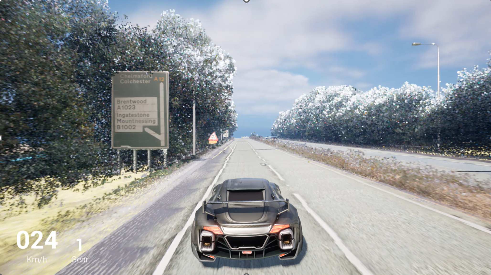
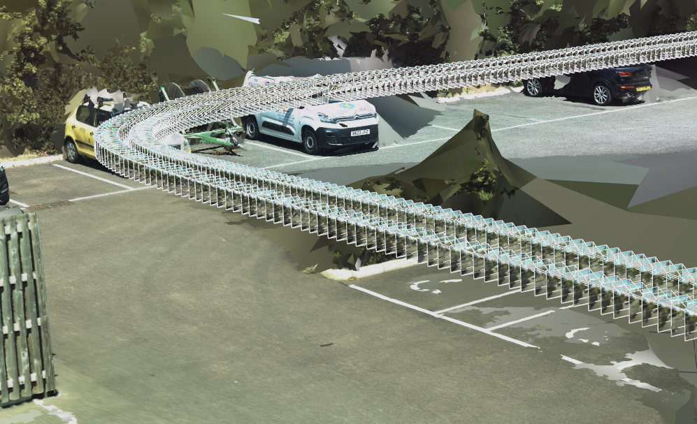
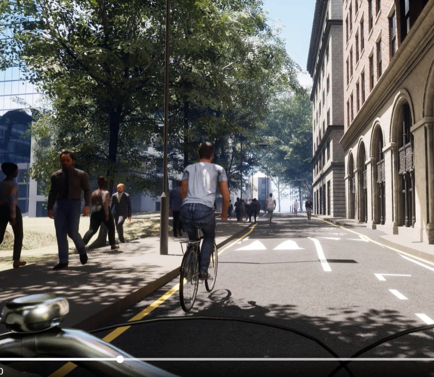
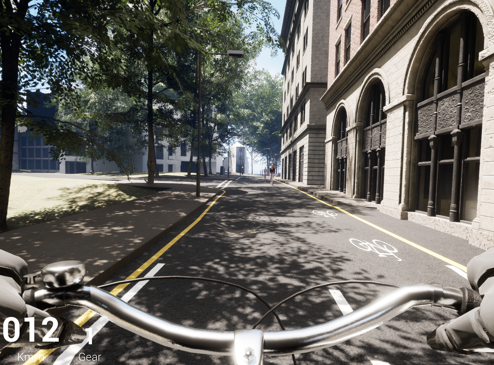

Cambridge Digital Roads • National Highways • UK Dept for Transport
Road Digital Twin 3D Reconstructions & Synthetic Simulation
Building automated procedural pipelines that transform raw mobile LiDAR surveys and point clouds into centimeter-accurate real-time 3D environments for infrastructure asset updating and large-scale behavioral safety studies.
1. The Problem: Disconnected Reality Data
Traditional highway maintenance relies on static GIS layers and fragmented CAD surveys. When survey vans collect millions of LiDAR points and gigabytes of 360-degree imagery, existing civil engineering CAD packages struggle with file sizes and real-time visualization.
Engineers were unable to "enter" and interact with their asset data in real time, and transport policy researchers lacked controlled, reproducible synthetic urban road environments to test vulnerable road user safety (such as cyclists and pedestrians) in diverse weather and traffic conditions.
2. Architecture & Procedural Generation Pipelines
As technical lead for 3D reconstruction, I engineered automated workflows linking point clouds to Unreal Engine 5:
- Dataset Engineering & Segmentation: Automated parsing and semantic classification of mobile mapping LiDAR across 40+ km of UK motorways (the CAMHighways open benchmark).
- Procedural Road Reconstruction: Built custom procedural algorithms in Houdini and Unreal Engine to dynamically reconstruct continuous pavement surfaces, curbs, and traffic signs from vector alignments.
- Dynamic Twin Updating: Created automated scripts that ingest newly surveyed road patches and seamlessly update the existing 3D twin without rebuilding entire corridor environments.


3. Immersive Cycling Safety Research (UK Department for Transport)
In collaboration with transport researchers, I directed the development of a high-fidelity London cycling Virtual Reality Environment (VRE) built in Unreal Engine to test cyclist risk perception:
- 24 Dynamic Urban Scenarios: Engineered custom vehicle AI, realistic weather transitions (rain, glare, fog), and road configurations (segregated bike lanes vs shared bus lanes).
- Large-Scale Crowdsourced Study: Deployed simulation videos across a nationwide UK study with over 3,000 active participants, collecting empirical behavioral data on cycle safety infrastructure.
- High-Fidelity Assets: Modeled bespoke London street furniture, double-decker buses, and dynamic pedestrian crowds to ensure high visual validity.


4. Video Walkthroughs & Demonstrations
Explore video demonstrations of the procedural dataset engineering and the cyclist simulation:
CAMHighways Procedural Dataset Generation
London Cycling Safety Simulation
5. Measurable Outcomes & Strategic Impact
3,000+ Study Participants
The cyclist VR simulation yielded the largest empirical cycling safety dataset for the UK Department for Transport.
Open Benchmark Published
Published the open-access CAMHighways dataset on ScienceDirect, serving international robotics and AV researchers.
90% Pipeline Automation
Replaced weeks of manual CAD tracing with an automated point cloud to textured Unreal Engine procedural mesh pipeline.